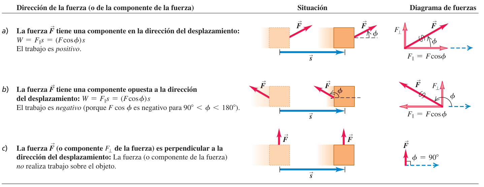
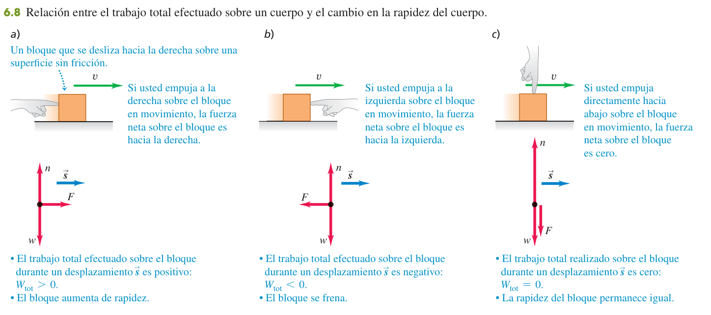
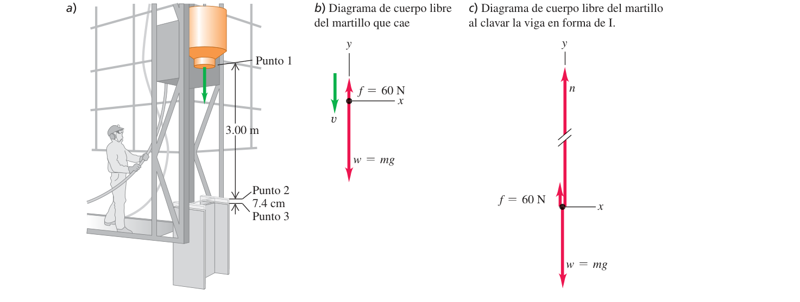
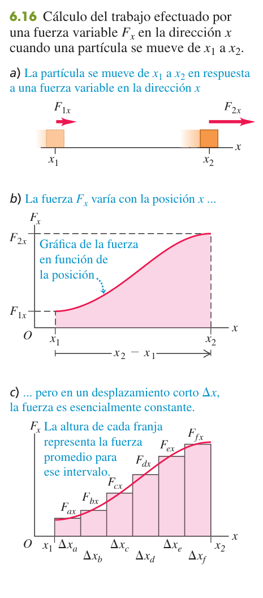
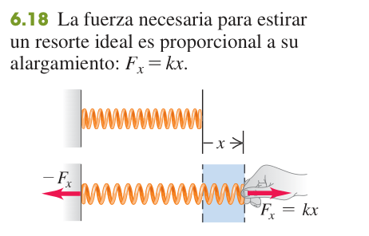
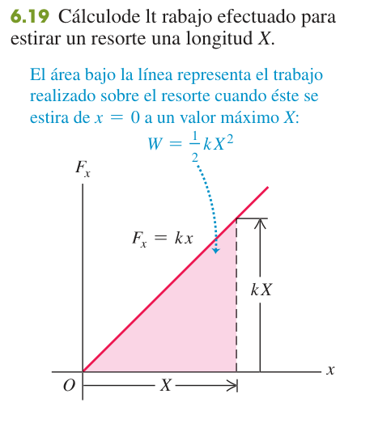
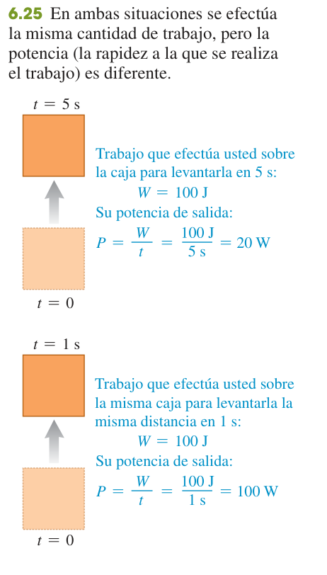

Trabajo y energía cinética
Un método nuevo para resolver problemas de movimiento sin pasar por el tiempo ni por la aceleración: calcular el trabajo de cada fuerza y compararlo con el cambio de la energía cinética. Sirve cuando la fuerza varía (resortes), cuando la trayectoria es curva y, en general, cuando el enunciado habla de distancias y rapideces, no de tiempos.
0Antes de empezar U p.172
Prerrequisitos: el producto escalar de dos vectores (tema 1, §1.10: $\vec A\cdot\vec B=AB\cos\phi=A_xB_x+A_yB_y+A_zB_z$); las ecuaciones de aceleración constante, sobre todo $v_x^2=v_{0x}^2+2a_x(x-x_0)$ (tema 2); la segunda ley $\sum\vec F=m\vec a$ y el diagrama de cuerpo libre (temas 4 y 5), incluida la fricción cinética $f_k=\mu_kn$ y la normal en un plano inclinado.
Mapa del tema: 6.1 define el trabajo de una fuerza constante ($W=Fs\cos\phi$) y cuándo es positivo, negativo o cero. 6.2 define la energía cinética $K=\tfrac12mv^2$ y demuestra el teorema trabajo-energía $W_{tot}=K_2-K_1$, que es la herramienta central. 6.3 lo extiende a fuerzas que varían con la posición (el trabajo es un área o una integral; el resorte y la ley de Hooke) y a trayectorias curvas. 6.4 introduce la potencia, la rapidez con que se hace trabajo.
El índice de exámenes asigna a este tema solo dos preguntas (la primera y la séptima de la tabla); las demás están catalogadas en otros temas, pero se resuelven mejor con trabajo y energía y por eso están aquí. Las convocatorias de Septiembre 2022 y 2023 no están en el índice principal (se detectaron en los recopilatorios escaneados). Todas están resueltas abajo:
| Pregunta de examen real | Ejercicio de esta página |
|---|---|
| Feb 2023 (1ª sem.) P-3 Opción A — teoría «Energía cinética y el teorema trabajo-energía» + 2 cuestiones | X1 |
| Sep 2022 P-3 (a) — por qué no cambia la rapidez en un MCU | X2 |
| Feb 2023 (2ª sem.) P-4 Opción B (a)(b) — trabajo de la gravedad en una órbita circular y elíptica | X3 |
| Sep 2022 P-4 Opción B (b) — trabajo entre dos playas | X4 |
| Feb 2024 (1ª sem.) P-1 — bala que penetra 2 m | X5 |
| Feb 2023 (1ª sem.) P-1 — satélite que se estrella | X6 |
| Feb 2023 (2ª sem.) P-1 — bloque contra la pared (= U 5.75); pide velocidad y trabajo | X7 |
| Feb 2020 (1ª sem.) P-1 (c) — polea móvil, velocidad de A tras 1 m | X8 |
| Sep 2022 P-2 (e) — masa de agua bombeada por ciclo (trabajo mgh) | X9 |
| Feb 2025 (1ª sem.) P-4 Opción B (a) — constante de cada mitad de un resorte | X10 |
| Sep 2023 P-2 — cuarto de círculo con fricción: μk y trabajo de la fricción | X11 |
Lo que viene: los problemas de «resorte + rampa + fricción» (Feb 2020 2ª sem. P-1; Feb 2022 2ª sem. P-1, que es el 7.73 de U; Sep 2024 P-1) usan exactamente las herramientas de este tema más la energía potencial: están en el tema 7. Las preguntas de trabajo y potencia en rotación (Feb 2025 2ª sem. P-3 Opción A) son del tema 10, y las de potencia de una máquina térmica del tema 20. No existe resumen de Academia_Tec para este tema: las explicaciones se basan en U y en los problemas.
X ×11- Elige dos puntos: la posición inicial (1) y la final (2), y dibuja el diagrama de cuerpo libre con todas las fuerzas que actúan sobre el cuerpo entre ambos.
- Escribe $K_1=\tfrac12mv_1^2$ y $K_2=\tfrac12mv_2^2$ (la masa, no el peso).
- Calcula el trabajo de cada fuerza con su signo ($W=Fs\cos\phi$ si es constante y el camino recto; el ángulo $\phi$ es el que forman la fuerza y el desplazamiento) y súmalos: $W_{tot}$.
- Aplica $W_{tot}=K_2-K_1$ (final menos inicial, nunca al revés) y despeja la incógnita.
- Evalúa: ¿tiene el signo de $W_{tot}$ el sentido correcto (más rápido o más lento)? ¿Sale $K_2\ge0$? Si puedes, comprueba con la segunda ley y la cinemática.
En U y en el solucionario se usa $g=9{,}80\ \text{m/s}^2$. Los enunciados de examen de 2023-2025 y el de Sep 2022 dan $g=9{,}81$ (salvo Sep 2023 P-2, que no la indica: se usa 9,81); los de Feb 2020 y Feb 2022 no la indican (aquí se usa 9,80). Cuando el cambio de $g$ altera el resultado, se da el valor con la otra $g$.
P1Trabajo de una fuerza U p.173
En la vida diaria «trabajar» es cualquier esfuerzo, físico o mental. En física es algo mucho más estricto: una fuerza hace trabajo sobre un cuerpo solo si el cuerpo se desplaza y la fuerza tiene componente a lo largo de ese desplazamiento. Empujar un coche averiado 18 m es trabajo; sostener una pesa quieta en el aire durante cinco minutos, no (aunque te canses: el cansancio viene de tus músculos, no de un desplazamiento de la pesa).
Una buena imagen: la energía es una moneda y el trabajo es una transferencia de monedas. Una fuerza que empuja en el sentido del movimiento ingresa energía al cuerpo (trabajo positivo); una que se opone retira energía (trabajo negativo); una que va de lado ni ingresa ni retira nada (trabajo cero).
U p.173-175Si una fuerza constante $\vec F$ actúa sobre una partícula que se desplaza en línea recta una distancia $s$, el trabajo de esa fuerza es $$W=Fs\cos\phi=\vec F\cdot\vec s\qquad\text{(ecs. 6.2 y 6.3)}$$ donde $\phi$ es el ángulo entre $\vec F$ y $\vec s$. Si $\vec F$ va en la dirección del desplazamiento ($\phi=0$) se reduce a $W=Fs$ (ec. 6.1). Es un escalar: no tiene dirección, aunque se calcule con dos vectores. Solo cuenta la componente $F_\parallel=F\cos\phi$ paralela al desplazamiento; la componente perpendicular $F_\perp$ no trabaja.
Unidad SI: el joule, $1\ \text{J}=1\ \text{N}\cdot\text{m}$. Levantar una manzana (1 N) un metro a velocidad constante cuesta 1 J.
U p.173-174
| Ángulo $\phi$ (fuerza–desplazamiento) | $\cos\phi$ | Trabajo | Ejemplo |
|---|---|---|---|
| $0\le\phi<90^\circ$ | $>0$ | $W>0$ (ingresa energía) | tu empujón sobre el coche; el peso al bajar |
| $\phi=90^\circ$ | $0$ | $W=0$ | la normal sobre un cuerpo que desliza; la tensión en un MCU; el peso en un camino horizontal |
| $90^\circ<\phi\le180^\circ$ | $<0$ | $W<0$ (retira energía) | la fricción cinética; el peso al subir |
Cuando un cuerpo hace trabajo negativo sobre otro, éste hace sobre el primero una cantidad igual de trabajo positivo, siempre que ambos cuerpos tengan el mismo desplazamiento (como las manos y la barra). Un levantador de pesas que baja una barra: la barra hace trabajo positivo sobre sus manos (empuja en el sentido en que se mueven) y sus manos hacen trabajo negativo sobre la barra (frenan su caída). Por eso hay que decir siempre qué fuerza hace el trabajo y sobre qué cuerpo.
Contraejemplo: si los cuerpos no se desplazan igual, la regla falla. Un bloque que desliza sobre un suelo fijo recibe del suelo una fricción que hace $W<0$ sobre el bloque; la fricción que el bloque ejerce sobre el suelo, en cambio, hace $W=0$ (el suelo no se mueve).
U p.176«Hay una fuerza, luego hay trabajo». Falso: sin desplazamiento (pesa quieta) o con la fuerza perpendicular al desplazamiento (normal, tensión en un movimiento circular, peso en un suelo horizontal) el trabajo es cero. Tampoco confundas la W mayúscula (trabajo) con la w minúscula (peso).
U p.173-175- Steve empuja con $F=210$ N un coche 18 m, con la fuerza a $30^\circ$ del desplazamiento: $W=Fs\cos\phi=(210)(18)\cos30^\circ=3{,}3\times10^3$ J.
- Otro coche: $\vec F=(160\ \text{N})\hat\imath-(40\ \text{N})\hat\jmath$ y $\vec s=(14\ \text{m})\hat\imath+(11\ \text{m})\hat\jmath$. Con componentes, $W=F_xs_x+F_ys_y=(160)(14)+(-40)(11)=1{,}8\times10^3$ J.
Cuando te dan los vectores en componentes, el producto escalar por componentes es más cómodo que buscar el ángulo.
U p.174Varias fuerzas: trabajo total
Como el trabajo es un escalar, el trabajo total sobre un cuerpo es la suma algebraica de los trabajos de cada fuerza: $W_{tot}=W_1+W_2+\dots$ Equivale a calcular el trabajo de la fuerza neta: $W_{tot}=(\sum\vec F)\cdot\vec s$. Se puede hacer de las dos formas, y conviene comprobar una con la otra.
U p.176Un tractor arrastra 20 m un remolque (peso 14 700 N) con una fuerza de 5000 N a $36{,}9^\circ$ sobre la horizontal; la fricción es de 3500 N.
- Peso y normal son perpendiculares al desplazamiento: $W_w=W_n=0$.
- Tractor: $W_T=F_Ts\cos36{,}9^\circ=(5000)(20)(0{,}800)=80$ kJ.
- Fricción ($\phi=180^\circ$): $W_f=-fs=-(3500)(20)=-70$ kJ.
- Total: $W_{tot}=0+0+80-70=10$ kJ. Por fuerza neta: $\sum F_x=5000\cos36{,}9^\circ-3500=500$ N, y $W_{tot}=(500)(20)=10$ kJ ✓.
$W_{tot}>0$: el remolque va cada vez más rápido (en la sección siguiente se calcula cuánto).
U p.176-1772Energía cinética y teorema trabajo-energía U p.177
Observa tres bloques que se deslizan sin fricción. Si empujas a favor del movimiento, la fuerza neta va a favor del desplazamiento, el trabajo total es positivo y el bloque acelera. Si empujas en contra, el trabajo total es negativo y frena. Si empujas de lado (hacia abajo), la fuerza neta es cero, no hay trabajo y la rapidez no cambia. Trabajo total y cambio de rapidez van siempre de la mano: la «moneda» que el trabajo transfiere se guarda en el cuerpo como energía cinética, la energía del movimiento.
U p.177-178
Es un escalar, depende solo de la masa y de la rapidez (no de la dirección del movimiento), nunca es negativa y vale cero solo en reposo. Se mide en joules: $1\ \text{J}=1\ \text{kg}\cdot\text{m}^2/\text{s}^2$. Duplicar la masa duplica $K$; duplicar la rapidez la cuadruplica.
U p.178El trabajo total realizado por todas las fuerzas sobre una partícula es igual al cambio de su energía cinética: $$\boxed{W_{tot}=K_2-K_1=\Delta K}\qquad\text{(ec. 6.6)}$$ $W_{tot}>0$: aumenta la rapidez. $W_{tot}<0$: disminuye. $W_{tot}=0$: se mantiene. Solo da cambios de rapidez, no de velocidad (dirección).
Deducción (fuerza neta constante en línea recta): por la segunda ley $F=ma_x$ y por la cinemática $v_2^2=v_1^2+2a_xs$ (ec. 2.13). Multiplicando por $m/2$: $Fs=\tfrac12mv_2^2-\tfrac12mv_1^2$ (ec. 6.4), y como $Fs$ es el trabajo de la fuerza neta, es $W_{tot}$.
U p.178El teorema no contiene el tiempo ni la aceleración: relaciona directamente lo que pasa en el punto 1 con lo que pasa en el punto 2 (rapideces, distancias, fuerzas). Cuando una fuerza varía durante el recorrido o la trayectoria es curva, la cinemática de aceleración constante no sirve, pero el teorema sí. A cambio, no te dice cuánto tarda: si te piden un tiempo, usa cinemática.
U p.179El remolque del ejemplo 6.2 ($m=14\,700/9{,}8=1500$ kg) parte con $v_1=2{,}0$ m/s. Tras los 20 m: $K_1=\tfrac12(1500)(2{,}0)^2=3000$ J; $K_2=K_1+W_{tot}=3000+10\,000=13\,000$ J; $\tfrac12(1500)v_2^2=13\,000\Rightarrow v_2=4{,}2$ m/s. Por dinámica: $a=500/1500=0{,}333$ m/s² y $v_2^2=v_1^2+2as=17{,}3$ m²/s², $v_2=4{,}2$ m/s: el mismo resultado, sin necesidad de la aceleración. Usar los dos métodos es una buena comprobación.
U p.179-180Un martillo de 200 kg se deja caer 3,00 m sobre una viga; los rieles ejercen una fricción de 60 N. Penetra 7,4 cm en el suelo hasta pararse.
- De 1 a 2 (caída): $W_{tot}=(w-f)s_{12}=(1960-60)(3{,}00)=5700$ J $=K_2-0\Rightarrow v_2=\sqrt{2(5700)/200}=7{,}55$ m/s.
- De 2 a 3 (clavado): $W_{tot}=(w-f-n)s_{23}=K_3-K_2=0-5700$ J, con $s_{23}=0{,}074$ m. De ahí $n=w-f+K_2/s_{23}=1960-60+5700/0{,}074=79\,000$ N (unas 9 toneladas, más de 40 veces el peso).
Una fuerza modesta actuando sobre una distancia larga da energía; una fuerza enorme sobre una distancia corta la quita. Es el mismo esquema de los problemas de «frenado en una distancia $d$».
U p.180-181
$K$ es el trabajo total necesario para llevar la partícula desde el reposo hasta su rapidez actual ($W_{tot}=K-0$), y también el trabajo total que la partícula puede hacer mientras se detiene. Por eso recoges la mano hacia atrás al atrapar una pelota: aumentas la distancia sobre la que actúa la fuerza y, para el mismo trabajo, la fuerza es menor.
U p.181Dos veleros de hielo de masas $m$ y $2m$, con velas idénticas (misma fuerza $F$), parten del reposo y recorren la misma distancia $s$. ¿Cuál llega con más energía cinética? Ambos: $W_{tot}=Fs$ para los dos, y como parten del reposo, $K=Fs$ en la meta. Llegan con la misma $K$ (el ligero con más rapidez, el pesado con más masa). No hizo falta saber el tiempo.
U p.182Se dedujo con las leyes de Newton, así que vale solo en un marco inercial (y en otro marco inercial $W$ y $\Delta K$ pueden ser distintos, pero se siguen igualando). Y es para cuerpos que se pueden tratar como partículas: un patinador que se empuja contra una pared gana energía cinética aunque la fuerza de la pared no haga trabajo (no se mueve su punto de aplicación); el trabajo lo hacen fuerzas internas entre sus partes (cap. 8).
U p.179, 182- Escribir $W=K_1-K_2$ (al revés): el teorema es «final menos inicial».
- Olvidar el ½ de $K$, o usar el peso $w$ en lugar de la masa $m$.
- Obtener una $K$ negativa: indica que se han invertido $K_1$ y $K_2$ o hay un error de signo en algún trabajo.
- Confundir el trabajo de una fuerza con el trabajo total: el teorema usa el total.
- Querer sacar de él un tiempo: no lo contiene.
3Trabajo y energía con fuerza variable U p.183
Cuando estiras un resorte, cuanto más lo estiras más fuerza hace falta: la fuerza no es constante. Pero si divides el recorrido en tramos muy cortos, en cada tramo la fuerza es casi constante y su trabajo es «fuerza × tramo». Sumar todos esos trozos da una integral, que gráficamente es el área bajo la curva fuerza–posición. Eso lo cambia todo: el trabajo de una fuerza variable es un área.
U p.183Es el área bajo la gráfica $F_x$–$x$ entre $x_1$ y $x_2$ (con signo: el área bajo el eje cuenta negativa si $x$ crece), o la fuerza media por el desplazamiento. Si $F_x$ es constante sale $W=F_x(x_2-x_1)=Fs$, el rectángulo del caso anterior.
U p.183
El resorte: ley de Hooke y trabajo
Para estirar un resorte ideal una distancia $x$ respecto de su longitud sin estirar hay que aplicarle una fuerza proporcional a $x$: $$F_x=kx\qquad\text{(ec. 6.8)}$$ $k$ es la constante de fuerza (N/m): un resorte blando de juguete, $\sim1$ N/m; la suspensión de un coche, $\sim10^5$ N/m. No es una ley fundamental, sino un modelo que funciona mientras la deformación es pequeña (se analiza en el cap. 11).
U p.184
Es el área del triángulo de la fig. 6.19 (base $X$, altura $kX$) o del trapecio de la 6.20. Es proporcional al cuadrado de la deformación: estirar 2 cm cuesta cuatro veces más trabajo que estirar 1 cm. Vale igual si el resorte se comprime ($x<0$): fuerza y desplazamiento llevan el mismo sentido, el trabajo es positivo y la fórmula no cambia.
U p.184-185
La ec. (6.10) es el trabajo que tú haces sobre el resorte para cambiar su longitud. El trabajo que el resorte hace sobre el cuerpo unido a él es el negativo: $-\tfrac12kx_2^2+\tfrac12kx_1^2$. En el teorema trabajo-energía de ese cuerpo se usa este último. (Si el resorte parte relajado y se estira o comprime una cantidad $x$, el resorte frena al cuerpo: $W_{resorte}=-\tfrac12kx^2$; si el resorte se relaja empujando al cuerpo, $W_{resorte}=+\tfrac12kx^2$.)
U p.185Una mujer de 600 N hace comprimir 1,0 cm el resorte de una báscula. $k=F/x=600/0{,}010=6{,}0\times10^4$ N/m y el trabajo de la mujer sobre el resorte es $W=\tfrac12kx^2=\tfrac12(6{,}0\times10^4)(0{,}010)^2=3{,}0$ J (positivo, como se espera). No importa qué sentido llames positivo: salen los mismos $k$ y $W$.
U p.185El teorema sigue valiendo
Con $a_x=\dfrac{dv_x}{dt}=v_x\dfrac{dv_x}{dx}$ (ec. 6.11) y $W_{tot}=\int F_x\,dx=\int mv_x\,dv_x$ (6.12) se obtiene $W_{tot}=\tfrac12mv_2^2-\tfrac12mv_1^2$ (6.13): el mismo teorema, aunque la fuerza no sea constante. Para una trayectoria curva, el trabajo se calcula con la integral de línea $W=\int\vec F\cdot d\vec l$ (6.14), y el teorema vale igualmente. Solo la componente de la fuerza paralela a la trayectoria cambia la rapidez; la componente perpendicular solo cambia la dirección.
U p.186-188Un deslizador de 0,100 kg unido a un resorte de $k=20{,}0$ N/m se mueve a $v_1=1{,}50$ m/s con el resorte relajado. ¿Hasta dónde llega, $d$?
- Sin fricción. Solo trabaja el resorte, y frena: $W_{res}=-\tfrac12kd^2$. Con $K_2=0$: $-\tfrac12kd^2=0-\tfrac12mv_1^2\Rightarrow d=v_1\sqrt{m/k}=0{,}106$ m $=10{,}6$ cm.
- Con fricción ($\mu_k=0{,}47$): $W_f=-\mu_kmg\,d$. Teorema: $-\mu_kmgd-\tfrac12kd^2=-\tfrac12mv_1^2$, una ecuación de segundo grado para $d$ cuya raíz positiva es $d=0{,}086$ m $=8{,}6$ cm.
Con $\mu_k=0$ la solución con fricción se reduce a la primera: buena comprobación. Con fricción llega menos lejos, como era de esperar.
U p.186-187Empujas a Throcky (peso $w$) en un columpio con una fuerza horizontal variable $F$, lentamente, hasta que las cadenas (longitud $R$) forman un ángulo $\theta_0$ con la vertical. Como casi no cambia su rapidez, $W_{tot}=0$. La tensión es perpendicular a la trayectoria en todo punto: $W_T=0$. Para $F$: casi equilibrio ⇒ $F=w\tan\theta$ y, con $dl=R\,d\theta$, $$W_F=\int_0^{\theta_0}(w\tan\theta)\cos\theta\,(R\,d\theta)=wR(1-\cos\theta_0)=mgh.$$ El peso hace entonces $-mgh$, donde $h=R(1-\cos\theta_0)$ es la altura ganada: el trabajo del peso en una trayectoria curva es $-mgh$, igual que si se subiera en vertical. Es un adelanto de la sección 7.1.
U p.188-1894Potencia U p.189
El trabajo no menciona el tiempo: subir una barra de 100 N un metro cuesta 100 J tardes 1 s o 1 año. Pero a ti y a un motor sí os importa cuánto tardáis. La potencia mide la rapidez con que se hace trabajo, como la velocidad mide la rapidez con que cambia la posición. La misma caja subida en 1 s en lugar de en 5 s exige cinco veces más potencia (fig. 6.25).
U p.189Es un escalar. Unidad SI: el watt, $1\ \text{W}=1\ \text{J/s}$ (también kW y MW). Otras: el caballo de potencia, $1\ \text{hp}=746\ \text{W}$, y el kilowatt-hora, $1\ \text{kW}\cdot\text{h}=3{,}6\times10^6\ \text{J}$, que es una unidad de energía, no de potencia.
U p.189-190
Si una fuerza $\vec F$ actúa sobre un cuerpo que se mueve con velocidad $\vec v$, con $\Delta W=F_\parallel\Delta s$: $$P_{med}=F_\parallel v_{med}\ \text{(6.17)}\qquad P=F_\parallel v\ \text{(6.18)}\qquad P=\vec F\cdot\vec v\ \text{(6.19)}$$ Es la forma práctica: potencia = fuerza × rapidez (la componente de la fuerza a lo largo de la velocidad). Si la fuerza es perpendicular a la velocidad, $P=0$ (la fuerza centrípeta no cambia la rapidez).
U p.190- 6.9 (Airbus A380). Cada motor da un empuje de $3{,}22\times10^5$ N a 250 m/s: $P=Fv=8{,}05\times10^7$ W $=108\,000$ hp. Con el avión parado en tierra, $v=0$ y $P=0$: ¡fuerza y potencia no son lo mismo!
- 6.10 (ascenso potente). Una corredora de 50,0 kg sube 443 m en 15,0 min a rapidez constante. Trabajo $=mgh=(50{,}0)(9{,}80)(443)=2{,}17\times10^5$ J; $P_{med}=2{,}17\times10^5/900=241$ W $=0{,}241$ kW $=0{,}323$ hp. Por la otra vía: $v=443/900=0{,}492$ m/s y $P=mgv=241$ W ✓.
Confundir energía con potencia: el kW·h (lo que cobra la compañía eléctrica) es energía; el kW es potencia. Y la potencia necesaria para subir a velocidad constante es $mgv$, no depende de cuánto se hizo antes.
U p.1905Ejercicios resueltos
Primero las preguntas de examen real (teoría, cuestiones cortas y problemas), de más conceptuales a más numéricas; después diez ejercicios del solucionario (E), de sencillos a elaborados. Cada uno termina con una receta y, si procede, el error típico. Intenta resolver tú antes de abrir la solución. (Los problemas de resorte + rampa + energía potencial de examen están en el tema 7; aquí solo el resorte «puro».)
X1 — Teoría: «Energía cinética y el teorema trabajo-energía» (+ dos cuestiones) X
Desarrolle el tema: Energía cinética y el teorema trabajo-energía. Además, responda a las siguientes cuestiones: (a) ¿Podría ser negativo el trabajo total efectuado sobre un objeto durante un desplazamiento? Razone la respuesta. (b) Si el trabajo total es negativo, su valor absoluto podría ser mayor que el valor de la energía cinética inicial del objeto. Razone la respuesta. (4 puntos.) = U P6.12
Guion para «desarrollar el tema» (en este orden gana puntos; casi todo está en las secciones 1-3 de arriba):
- Por qué hace falta. Con leyes de Newton y fuerzas constantes basta la cinemática; si la fuerza varía con la posición o la trayectoria es curva no. Trabajo y energía relacionan rapideces en dos posiciones sin pasar por el tiempo (U p.172-173).
- Trabajo de una fuerza constante: $W=Fs\cos\phi=\vec F\cdot\vec s$ (6.2-6.3), escalar, en J. Signos: $W>0$ si $\phi<90^\circ$, $W=0$ si $\phi=90^\circ$, $W<0$ si $\phi>90^\circ$. Trabajo total = suma algebraica = trabajo de la fuerza neta (U p.174-176).
- Energía cinética: $K=\tfrac12mv^2$ (6.5): escalar, $K\ge0$, depende de la rapidez y no de la dirección; unidades J (U p.178).
- Deducción con fuerza neta constante: $F=ma_x$ y $v_2^2=v_1^2+2a_xs$ dan $Fs=\tfrac12mv_2^2-\tfrac12mv_1^2$ (6.4).
- Teorema: $W_{tot}=K_2-K_1=\Delta K$ (6.6). $W_{tot}>0$ ⇒ acelera; $<0$ ⇒ frena; $=0$ ⇒ rapidez constante.
- Generalización: fuerza variable, $W=\int F_x\,dx$ (área bajo $F$–$x$, 6.7) y el teorema sigue valiendo (6.11-6.13); trayectoria curva, $W=\int\vec F\cdot d\vec l$ (6.14) (U p.183-188).
- Significado de $K$: trabajo para acelerar desde el reposo, o trabajo que puede hacer al detenerse (martinete, Ej. 6.4) (U p.181).
- Límites: marco inercial y cuerpo tratable como partícula (U p.179, 182).
- Ejemplo numérico: remolque del Ej. 6.2-6.3: $W_{tot}=10$ kJ, $v_1=2{,}0\to v_2=4{,}2$ m/s.
(a) Sí. $W_{tot}$ es el trabajo de la fuerza neta; es negativo cuando la fuerza neta tiene componente opuesta al desplazamiento ($\phi>90^\circ$). Por el teorema, $W_{tot}<0\iff K_2<K_1$: el cuerpo se frena. Ejemplo: un bloque de 2 kg desliza a 3 m/s sobre un suelo con fricción cinética de 4 N; en 1 m, $W_f=-4$ J (el peso y la normal no trabajan), $K_1=9$ J, $K_2=5$ J y $v_2=\sqrt{2(5)/2}=2{,}24$ m/s.
(b) No. Del teorema, $K_2=K_1+W_{tot}=K_1-|W_{tot}|$, y la energía cinética nunca es negativa ($K_2\ge0$), luego $|W_{tot}|\le K_1$. El caso límite $|W_{tot}|=K_1$ es cuando el cuerpo se detiene. En el ejemplo, la fricción para el bloque tras $s=K_1/f=9/4=2{,}25$ m con $W_f=-9$ J; un trabajo de $-12$ J daría $K_2=-3$ J, imposible. (Matiz para nota: lo que se compara es el trabajo total; una fuerza individual sí puede hacer un trabajo negativo mayor que $K_1$ si otra aporta trabajo positivo.)
X2 — Cuestión: ¿por qué no cambia la rapidez en un movimiento circular uniforme? X
Una partícula en movimiento circular uniforme sufre siempre la acción de una fuerza neta, ¿por qué no cambia el módulo de la velocidad de la partícula? Justifique su respuesta. (Convocatoria de Septiembre 2022, no recogida en el índice de exámenes principal: ver la nota final del índice.)
- La fuerza neta en un MCU es la centrípeta, dirigida al centro ($\sum F=mv^2/R$, U ec. 5.16, p.151); la velocidad es tangente a la trayectoria. Forman $\phi=90^\circ$ en todo instante.
- Potencia de la fuerza neta: $P=\vec F\cdot\vec v=Fv\cos90^\circ=0$ (ec. 6.19); o, por tramo, $dW=\vec F\cdot d\vec l=0$ (6.14).
- Por el teorema, $\Delta K=W_{tot}=0$: $\tfrac12mv^2$ es constante y, con ella, el módulo de $\vec v$. La fuerza solo cambia la dirección de la velocidad (U p.188: la componente perpendicular a la trayectoria no cambia la rapidez).
X3 — Cuestión: trabajo de la gravedad sobre un planeta en órbita circular y elíptica X
(a) Un planeta se mueve con velocidad constante en una órbita circular alrededor de su estrella. ¿Cuál es el trabajo neto que ejerce su estrella sobre el planeta al describir una órbita completa? Razone la respuesta. (b) En el caso anterior si la órbita fuera elíptica en lugar de circular, la velocidad no podría ser constante en cada momento. ¿Cuál es el trabajo neto que ejerce su estrella sobre el planeta al describir una órbita completa? ¿Qué diferencia habría en relación con el caso de la órbita circular? Razone la respuesta. (Tema principal: gravitación, tema 13.)
- (a) La fuerza gravitatoria apunta al centro y la velocidad es tangente: $\vec F\cdot d\vec l=0$ en cada punto, así que $W=0$ en la órbita completa y en cualquier trozo de ella (como en X2; cf. «Evalúe su comprensión 6.3», U p.189).
- (b) En una elipse la fuerza (hacia la estrella) no es perpendicular a la velocidad, salvo en el perihelio y el afelio. Al acercarse, $\phi<90^\circ$: trabajo positivo y el planeta acelera; al alejarse, $\phi>90^\circ$: trabajo negativo y frena (figura de X2, panel derecho).
- Tras una vuelta completa el planeta vuelve al mismo punto con la misma rapidez: $K_2=K_1$, y por el teorema (6.6) $W_{tot}=0$ también (la gravedad de la estrella es la única fuerza).
- Diferencia: en la circular el trabajo es cero en cada tramo; en la elíptica es cero solo en el ciclo completo (los tramos positivos compensan a los negativos).
X4 — Cuestión: trabajo para ir de la playa de la Malvarrosa a la Barceloneta X
Explique cuál sería el trabajo resultante para ir desde la playa de la Malvarrosa en Valencia a la Barceloneta en Barcelona. No considere la acción de fuerzas no conservativas. (Convocatoria de Septiembre 2022; tema principal: gravitación, tema 13.)
- Sin fuerzas no conservativas, la única fuerza que trabaja es el peso (la normal del suelo es perpendicular al desplazamiento, $W=0$).
- El trabajo del peso solo depende de la diferencia de altura entre los extremos, $W_{peso}=-mg(y_2-y_1)$, sea cual sea el camino (lo vimos para un arco en el Ej. 6.8, U p.189; se demuestra en general en U §7.1, p.204).
- Ambas playas están al nivel del mar: $y_2=y_1$ y el trabajo resultante es cero. Coherente con el teorema: si sales y llegas con la misma rapidez, $\Delta K=0$.
El apartado (a) de esa misma pregunta escribe la energía potencial gravitatoria como $U=GMm/r$ sin el signo menos; en U la ec. (13.9), p.405, es $U=-GMm/r$. Es una errata del examen que se discute en el tema 13.
U p.405 XX5 — Bala que penetra un material (por trabajo-energía) X
Para probar una protección antibalas, se dispara una bala de 10 g de masa contra una pieza de un nuevo material que se encuentra en el suelo, de forma que la trayectoria de la bala es perpendicular sobre el material. La bala queda incrustada en el material penetrando 2 m de profundidad. Si la bala se disparó a 100 m/s y se supone que la aceleración de la bala al incrustarse es constante, calcular: (a) el valor de la deceleración de la bala; (b) ¿qué fuerza ejerció el material sobre la bala para frenarla?; (c) ¿qué tiempo tardó la bala hasta pararse desde que entró en contacto con el material? Considere $g=9{,}81$ m/s². (3 puntos.) → tema 2
Este problema ya está resuelto por cinemática en el tema 2. Aquí, el mismo por trabajo-energía: nos dan distancia y rapideces, no tiempos (Estrategia 6.1).
- Energías. $m=0{,}010$ kg, $v_1=100$ m/s, $v_2=0$: $K_1=\tfrac12(0{,}010)(100)^2=50{,}0$ J; $K_2=0$.
- Trabajos (la bala cae en vertical sobre el material): el peso va a favor del desplazamiento, $W_{peso}=+mgd=(0{,}010)(9{,}81)(2)=+0{,}196$ J; la fuerza del material $F$ va en contra, $W_F=-Fd$.
- Teorema. $mgd-Fd=0-K_1$, luego $F=\dfrac{K_1}{d}+mg=25{,}0+0{,}098=\mathbf{25{,}1\ N}$. (Si se desprecia el peso, $F=K_1/d=25{,}0$ N; el peso es solo el 0,4 %.) (b)
- (a) Deceleración. Por la segunda ley, $a=(F-mg)/m=K_1/(md)=v_1^2/(2d)=\mathbf{2{,}50\times10^3\ m/s^2}$ (hacia arriba; igual que con la ec. 2.13, U p.47).
- (c) Tiempo. El teorema no da tiempos; con aceleración constante la velocidad media es $(v_1+0)/2$, luego $t=2d/v_1=\mathbf{0{,}040\ s}$.
Resultado: $a=2{,}50\times10^3$ m/s²; $F=25{,}1$ N (25,0 N sin el peso); $t=0{,}040$ s.
X6 — Satélite que se estrella (por trabajo-energía) X
Un satélite artificial se estrella contra la Tierra. Su masa es de 210 kg y la velocidad de impacto contra la superficie es de 311 km/h. Los restos del satélite penetraron hasta una profundidad de 81 cm. (a) Suponiendo que era constante, ¿cuál fue su aceleración durante el choque? (b) ¿Qué fuerza ejerció el suelo sobre el satélite durante el choque? (c) ¿Durante cuánto tiempo se ejerció la mencionada fuerza? Considere $g=9{,}81$ m/s². (3 puntos.)
Resuelto por cinemática en el tema 2; ahora por trabajo-energía, suponiendo la penetración vertical (lo que da sentido a $g$).
- Datos. $v_1=311/3{,}6=86{,}4$ m/s; $d=0{,}81$ m; $v_2=0$. $K_1=\tfrac12(210)(86{,}39)^2=7{,}84\times10^5$ J; $K_2=0$.
- Trabajos. El peso ($mg=2060$ N) va a favor del desplazamiento: $W_{peso}=+mgd=+1669$ J. La fuerza del suelo $F$, hacia arriba, va en contra: $W_F=-Fd$.
- (b) Teorema. $mgd-Fd=-K_1\Rightarrow F=mg+K_1/d=2060+9{,}67\times10^5=\mathbf{9{,}69\times10^5\ N}$ (unas 470 veces el peso).
- (a) $a=(F-mg)/m=v_1^2/(2d)=\mathbf{4{,}61\times10^3\ m/s^2}$ hacia arriba (unas 470 g).
- (c) $t=2d/v_1=\mathbf{0{,}0188\ s}$.
Resultado: $a=4{,}61\times10^3$ m/s²; $F=9{,}69\times10^5$ N; $t=0{,}0188$ s.
X7 — Bloque empujado contra una pared: velocidad y trabajo X
Se coloca un bloque de 5 kg contra una pared vertical. Se aplica una fuerza constante $\vec F$ al bloque, donde $F=96{,}0$ N y la fuerza está en un ángulo de $60{,}0^\circ$ con la horizontal. El coeficiente de fricción cinética entre el bloque y la pared es 0,300. Si el bloque está inicialmente en reposo: (a) ¿cuál será el módulo de su velocidad después de que haya recorrido 0,400 m sobre la pared? (b) ¿Cuál será el trabajo realizado en el desplazamiento? Considere $g=9{,}81$ m/s². (3 puntos.) = U 5.75
La dinámica (normal, fricción, aceleración) se resolvió en el tema 5; aquí el enfoque de energía. $F$ apunta hacia la pared y hacia arriba; el bloque sube.
- Normal y fricción (necesarias para el trabajo de la fricción): horizontalmente $a_x=0$, luego $n=F\cos60^\circ=48{,}0$ N y $f_k=\mu_kn=14{,}4$ N.
- Trabajo de cada fuerza (desplazamiento 0,400 m hacia arriba):
- $W_F=Fs\cos30^\circ=(96{,}0)(0{,}400)(0{,}866)=+33{,}3$ J. El ángulo entre $\vec F$ y $\vec s$ es $30^\circ$ (la fuerza está a $60^\circ$ de la horizontal, pero el desplazamiento es vertical); la componente horizontal no trabaja.
- $W_{peso}=-mgs=-(5)(9{,}81)(0{,}400)=-19{,}6$ J ($\phi=180^\circ$).
- $W_f=-f_ks=-(14{,}4)(0{,}400)=-5{,}76$ J.
- $W_n=0$ ($\phi=90^\circ$).
- Trabajo total: $W_{tot}=33{,}26-19{,}62-5{,}76=+7{,}88$ J (positivo: el bloque acelera).
- (a) Teorema: $\tfrac12mv_2^2-0=W_{tot}\Rightarrow v_2=\sqrt{2(7{,}875)/5}=\mathbf{1{,}77\ m/s}$. Coincide con la vía dinámica ($a=3{,}94$ m/s², $v=\sqrt{2as}$), la comprobación que recomienda U (Ej. 6.3).
- (b) «El trabajo realizado»: el enunciado no precisa la fuerza; lo natural es el trabajo de $\vec F$, 33,3 J; conviene dar también el trabajo total, 7,88 J $=\Delta K$, con el desglose.
Resultado: $v=1{,}77$ m/s; $W_F=33{,}3$ J; $W_{peso}=-19{,}6$ J; $W_f=-5{,}76$ J; $W_n=0$; $W_{tot}=7{,}88$ J. (Con $g=9{,}80$: $v=1{,}78$ m/s, como el solucionario 5-38.)
X8 — Polea móvil: velocidad de A tras 1 m (apartado c) X
Sistema de poleas de masa despreciable: $m_A=1{,}5$ kg sobre un plano inclinado $30^\circ$ con $\mu=0{,}1$; $m_B=1$ kg cuelga de una polea móvil. (c) Calcular la velocidad de A después de haber recorrido un metro sobre el plano inclinado, suponiendo que el sistema parte del reposo. (3 puntos en total; la figura y los apartados (a)-(b) están en el tema 5.) $g=9{,}80$ (no indicada).
Recordatorio del tema 5: A baja por el plano y B sube; por la ligadura de la polea móvil $s_B=s_A/2$ y $v_B=v_A/2$.
- Teorema en cada cuerpo (cada uno es una partícula) y suma. Sobre A (1 m plano abajo): $W_{peso,A}=m_Ag\sin30^\circ(1)=+7{,}35$ J; $W_f=-\mu m_Ag\cos30^\circ(1)=-1{,}27$ J; $W_{T,A}=-T(1)$.
- Sobre B (0,50 m hacia arriba): $W_{peso,B}=-m_Bg(0{,}50)=-4{,}90$ J; la polea móvil tira de B con $2T$: $W_{2T}=+2T(0{,}50)=+T(1)$.
- Al sumar, los trabajos de la tensión se cancelan ($-T+T=0$): con cuerda ideal y poleas sin masa ni fricción la cuerda solo transmite energía de un cuerpo al otro. (Con $T=5{,}07$ N: $-5{,}07$ J y $+5{,}07$ J.) Por eso no hace falta calcular $T$.
- $W_{tot}=7{,}35-1{,}27-4{,}90=1{,}18$ J $=\tfrac12m_Av_A^2+\tfrac12m_B(v_A/2)^2=\tfrac12(1{,}5+0{,}25)v_A^2$.
- $v_A=\sqrt{2(1{,}177)/1{,}75}=\mathbf{1{,}16\ m/s}$ ($v_B=0{,}580$ m/s), igual que por dinámica en el tema 5.
X9 — Cuestión: masa de agua que bombea una máquina por ciclo (trabajo mgh) X
¿Qué masa de agua puede bombear esta máquina desde un pozo de 20 m de profundidad por cada ciclo? Considere $g=9{,}81$ m/s². (Apartado (e) de un problema de una máquina de Carnot que absorbe 400 J por ciclo con eficiencia térmica del 23 %; convocatoria de Septiembre 2022; tema principal 20.)
- Trabajo útil por ciclo: es la definición de eficiencia térmica, $e=W/Q_H$ (U §20.2, ec. 20.4, p.650; tema 20): $W=eQ_H=0{,}23\times400=92$ J.
- Subir agua a rapidez constante exige hacer un trabajo $W=mgh$ contra la gravedad (como la corredora del Ej. 6.10, U p.191): el teorema da $W_{motor}+W_{peso}=\Delta K=0$ con $W_{peso}=-mgh$.
- $m=\dfrac{W}{gh}=\dfrac{92}{(9{,}81)(20)}=\mathbf{0{,}469\ kg}$ por ciclo.
X10 — Cuestión: constante de fuerza de cada mitad de un resorte X
Si un resorte uniforme se corta a la mitad, ¿qué constante de fuerza tendrá cada mitad? (Primera parte de una cuestión de la Opción B; es literalmente el ejercicio 6.46(a) de U, p.197.)
- Cada mitad soporta la misma fuerza $F$ que el resorte entero (la tensión se transmite a lo largo del resorte), pero se estira solo la mitad, $x/2$ (el alargamiento se reparte de forma uniforme entre las espiras).
- Ley de Hooke (6.8): $k'=\dfrac{F}{x/2}=\dfrac{2F}{x}=\mathbf{2k}$. Cada mitad es el doble de rígida.
Consecuencia: para el mismo trabajo, $\tfrac12kx^2$, la mitad de resorte se deforma menos; y en el tema 14 se verá que la frecuencia de oscilación se multiplica por $\sqrt2$.
X11 — Cuarto de círculo con fricción: μk y trabajo de la fricción en el arco X
Una partícula de masa 0,5 kg que se encuentra en reposo se suelta desde una posición A, que forma un cuarto de círculo de radio $R=2{,}1$ m según se muestra en la figura, deslizándose hasta llegar al punto B con una velocidad de 5,2 m/s. A partir de este punto, la partícula se desplaza sobre una superficie horizontal hasta el punto C situado a 5 m, donde se detiene. Calcular (a) el coeficiente de fricción cinética de la superficie horizontal y (b) el trabajo de la fuerza de rozamiento sobre la partícula al deslizarse desde el punto A al B. (3 puntos.) (Convocatoria de Septiembre 2023, no recogida en el índice principal de exámenes; el enunciado no da $g$: se usa 9,81. Es una variante del problema 7.57 de U, p. 233.)
- (a) Tramo BC (fuerzas constantes, camino recto). Peso y normal son perpendiculares al desplazamiento ($W=0$); $n=mg$ y la fricción cinética $f_k=\mu_kmg$ va en contra: $W_f=-\mu_kmg\,s$.
- Teorema entre B y C ($K_B=\tfrac12mv_B^2$, $K_C=0$): $-\mu_kmg\,s=0-\tfrac12mv_B^2\Rightarrow\mu_k=\dfrac{v_B^2}{2gs}=\dfrac{(5{,}2)^2}{2(9{,}81)(5)}=\mathbf{0{,}276}$. La masa se cancela; con $g=9{,}80$ sale también 0,276.
- (b) Tramo AB (curvo). Aquí la fricción es desconocida y varía de un punto a otro (la normal ya no es $mg$ y cambia en cada punto), pero no hace falta conocerla: el teorema vale en trayectorias curvas (U p.187-188) y permite obtener $W_f$ por diferencia.
- Trabajo del peso en el arco. Solo depende del descenso vertical, que es $R$ (como en el Ej. 6.8, donde subir una altura $h$ daba $-mgh$): $W_{peso}=+mgR=(0{,}5)(9{,}81)(2{,}1)=+10{,}30$ J. No es $mg$ por la longitud del arco. La normal es perpendicular a la trayectoria en cada punto: $W_n=0$.
- Teorema entre A y B ($K_A=0$): $W_{peso}+W_f=K_B$, luego $W_f=\tfrac12(0{,}5)(5{,}2)^2-10{,}30=6{,}76-10{,}30=\mathbf{-3{,}54\ J}$ (con $g=9{,}80$: $-3{,}53$ J).
- Comprobación. Sin fricción llegaría a B con $v=\sqrt{2gR}=6{,}42$ m/s, mayor que 5,2 m/s: la fricción tiene que quitar energía ($W_f<0$). Y en BC la fricción retira los 6,76 J que tenía la partícula en B.
Resultado: $\mu_k=0{,}276$; $W_f(A\to B)=-3{,}54$ J.
Problemas del solucionario (E)
E1 — Problema 6.2: cable que arrastra un coche (trabajo con ángulo) E
Un camión de remolque jala de un automóvil 5,00 km por una carretera horizontal usando un cable cuya tensión es de 1350 N. (a) ¿Cuánto trabajo realiza el cable sobre el automóvil si jala de él horizontalmente? ¿Y si se jala a 35,0° sobre la horizontal? (b) ¿Cuánto trabajo realiza el cable sobre el camión en ambos casos? (c) ¿Cuánto trabajo efectúa la gravedad sobre el automóvil?
- Fuerza constante, camino recto: $W=Ts\cos\phi$ (6.2), con $s=5{,}00\times10^3$ m.
- (a) $\phi=0^\circ$: $W=(1350)(5000)=\mathbf{6{,}75\times10^6\ J}$. $\phi=35^\circ$: $W=6{,}75\times10^6\cos35^\circ=\mathbf{5{,}53\times10^6\ J}$ (solo trabaja $T\cos35^\circ=1106$ N).
- (b) Por la tercera ley el cable tira del camión hacia atrás con la misma tensión: $\phi=180^\circ$ y $W=\mathbf{-6{,}75\times10^6\ J}$ en el primer caso; en el segundo, con el cable a $35^\circ$ sobre el camión, la fuerza sobre el camión apunta hacia atrás y hacia abajo y el ángulo con el desplazamiento es $\phi=145^\circ$: $W=6{,}75\times10^6\cos145^\circ=\mathbf{-5{,}53\times10^6\ J}$ (Solucionario 6-1). El motor del camión aporta la energía; el cable solo la transmite.
- (c) El peso es vertical y el desplazamiento horizontal: $\phi=90^\circ$, $W=\mathbf{0}$.
E2 — Problema 6.63: maleta en una rampa, trabajo de cada fuerza E
Un transportador de equipaje jala una maleta de 20,0 kg para subirla por una rampa inclinada 32,0° con una fuerza $\vec F$ de 160 N paralela a la rampa. El coeficiente de fricción cinética es $\mu_k=0{,}300$. Si la maleta viaja 3,80 m en la rampa, calcule el trabajo sobre ella (a) por $\vec F$; (b) por la gravedad; (c) por la normal; (d) por la fricción; (e) el trabajo total; (f) si la rapidez es cero en la base, ¿qué rapidez tiene tras subir 3,80 m?
- (a) $\vec F$ es paralela a $\vec s$ ($\phi=0^\circ$): $W_F=(160)(3{,}80)=\mathbf{608\ J}$.
- (b) El ángulo entre $\vec w$ (vertical, abajo) y $\vec s$ (32° sobre la horizontal) es $122^\circ$: $W_w=(196)(3{,}80)\cos122^\circ=\mathbf{-395\ J}$. Equivale a que solo trabaja $w\sin32^\circ=103{,}9$ N, opuesta: $-(103{,}9)(3{,}80)=-mgh$ con $h=3{,}80\sin32^\circ=2{,}01$ m.
- (c) La normal es perpendicular a $\vec s$: $W_n=\mathbf{0}$.
- (d) Eje perpendicular, $a_y=0$: $n=w\cos32^\circ=166{,}2$ N; $f_k=0{,}300\,n=49{,}9$ N; $W_f=-(49{,}87)(3{,}80)=\mathbf{-189\ J}$.
- (e) $W_{tot}=608-394{,}7+0-189{,}5=\mathbf{23{,}8\ J}$ (el solucionario redondea a 24 J).
- (f) $\tfrac12(20{,}0)v_2^2=23{,}8\Rightarrow v_2=\mathbf{1{,}54\ m/s}$ (solucionario: 1,5 m/s).
(i) Para $W_F$ el solucionario escribe «$\phi=90^\circ$», pero $\vec F$ y $\vec s$ son paralelas: debe ser $\phi=0^\circ$ (el valor 608 J sí es correcto). (ii) En la comprobación alternativa dice «$W_w=W_{w\sin25^\circ}=-315$ J, which agrees with the above», lo cual es falso: con 32° sale $-(196)(\sin32^\circ)(3{,}80)=-395$ J (−315 J corresponde a 25°, resto de otra edición). Los resultados finales (608; −395; 0; −189; 24 J; 1,5 m/s) son correctos.
EE3 — Ejercicio 6.31: distancia de frenado E
Un automóvil viaja por un camino horizontal con rapidez $v_0$ cuando los frenos se bloquean y las llantas se deslizan. (a) Use el teorema trabajo-energía para calcular la distancia mínima en que puede detenerse en términos de $v_0$, $g$ y $\mu_k$. (b) ¿En qué factor cambiaría la distancia mínima si i. se duplicara $\mu_k$, ii. se duplicara $v_0$, iii. se duplicaran ambas?
- Solo trabaja la fricción (peso y normal son perpendiculares): $W_{tot}=-\mu_kmg\,s$.
- $K_1=\tfrac12mv_0^2$, $K_2=0$: $-\mu_kmgs=-\tfrac12mv_0^2\Rightarrow\boxed{s=\dfrac{v_0^2}{2\mu_kg}}$. La masa se cancela: un camión y un coche con las mismas ruedas frenan en la misma distancia.
- (b) $s\propto v_0^2/\mu_k$: i. $\mu_k\times2\Rightarrow s/2$; ii. $v_0\times2\Rightarrow4s$; iii. ambos $\Rightarrow4/2=\mathbf{2s}$.
- Ejemplo (propio): $v_0=25$ m/s (90 km/h), $\mu_k=0{,}8$: $s=39{,}9$ m; a 50 m/s, 159 m.
E4 — Ejercicio 6.34: ley de Hooke y trabajo para deformar un resorte E
Se requiere un trabajo de 12,0 J para estirar un resorte 3,00 cm con respecto a su longitud no estirada. (a) ¿Cuál es la constante de fuerza? (b) ¿Qué fuerza se necesita para estirarlo 3,00 cm? (c) ¿Cuánto trabajo debe efectuarse para comprimirlo 4,00 cm con respecto a su longitud no estirada, y qué fuerza se necesita?
- (a) Trabajo sobre el resorte desde $x=0$ hasta $X$ (6.9): $W=\tfrac12kX^2\Rightarrow k=2W/X^2=2(12{,}0)/(0{,}0300)^2=\mathbf{2{,}67\times10^4\ N/m}$.
- (b) Hooke (6.8): $F=kX=(2{,}667\times10^4)(0{,}0300)=\mathbf{800\ N}$. (Comprobación: fuerza media $F/2=400$ N por 0,03 m son 12 J.)
- (c) Al comprimir, $x=-0{,}0400$ m, pero la fórmula vale igual (U p.185): $W=\tfrac12k(0{,}0400)^2=\mathbf{21{,}3\ J}$ y $|F|=k(0{,}0400)=\mathbf{1{,}07\times10^3\ N}$.
Nota: el solucionario da 801 N y 21,4 J por usar $k$ redondeado; los exactos son 800 N y 21,3 J.
E5 — Problema 6.79: compresión máxima de un resorte E
Un bloque de 5,00 kg se mueve con $v_0=6{,}00$ m/s en una superficie horizontal sin fricción hacia un resorte de constante $k=500$ N/m unido a una pared. El resorte tiene masa despreciable. (a) Calcule la distancia máxima que se comprimirá el resorte. (b) Si dicha distancia no debe ser mayor que 0,150 m, ¿qué valor máximo debería tener $v_0$?
- Mientras comprime, la única fuerza que trabaja es la del resorte, que se opone al movimiento: $W_{res}=-\tfrac12kX^2$ (el negativo de 6.10; «Cuidado» p.185).
- En la compresión máxima el bloque se detiene, $K_2=0$: $-\tfrac12kX^2=0-\tfrac12mv_0^2\Rightarrow X=v_0\sqrt{m/k}=6{,}00\sqrt{5/500}=\mathbf{0{,}600\ m}$.
- (b) $v_0=X\sqrt{k/m}=0{,}150\sqrt{100}=\mathbf{1{,}50\ m/s}$.
E6 — Ejercicios 6.43 y 6.44: fuerza variable dada por una gráfica E
6.43. A un automóvil a escala de 2,0 kg, controlado por radio, se le aplica una fuerza $\vec F$ paralela al eje $x$ que varía con $x$ (figura E6.43). Calcule el trabajo de $\vec F$ cuando el auto se mueve de (a) $x=0$ a 3,0 m; (b) 3,0 a 4,0 m; (c) 4,0 a 7,0 m; (d) 0 a 7,0 m; (e) 7,0 a 2,0 m. 6.44. Si el auto está inicialmente en reposo en $x=0$ y $\vec F$ es la fuerza neta, use el teorema para hallar su rapidez en (a) $x=3{,}0$; (b) 4,0; (c) 7,0 m.
La gráfica (U p.197): $F_x$ crece linealmente de 0 en $x=0$ a 2 N en $x=2$ m; vale 2 N hasta $x=3$; cae a 0 y vale 0 entre 3 y 4 m; baja linealmente de 0 en $x=4$ a $-1$ N en $x=6$; vuelve a 0 y sigue en 0 hasta 7 m.
- $W=\int F_x\,dx$ es el área con signo bajo la curva (6.7): por encima del eje cuenta positiva si $x$ aumenta; si $x$ disminuye, el signo se invierte.
- 6.43. (a) triángulo $\tfrac12(2)(2)$ + rectángulo $(1)(2)$ = +4,0 J. (b) $F_x=0$: 0. (c) triángulo bajo el eje $\tfrac12(2)(-1)=$ −1,0 J (fuerza opuesta al movimiento). (d) suma: +3,0 J. (e) de 7 a 3 m: fuerza hacia $-x$ y desplazamiento hacia $-x$, $+1{,}0$ J; de 3 a 2 m: fuerza $+2$ N y desplazamiento $-1$ m, $-2{,}0$ J; total −1,0 J.
- 6.44. $v=\sqrt{2W/m}$ con $K_1=0$: (a) $\sqrt{2(4)/2}=\mathbf{2{,}00\ m/s}$; (b) igual, 2,00 m/s (de 3 a 4 m no hay fuerza); (c) $\sqrt{2(3)/2}=\mathbf{1{,}73\ m/s}$ (de 4 a 6 m la fuerza frena).
E7 — Ejercicio 6.49: fuerza que depende de la posición (integral) E
Se aplica una fuerza $F(x)=18{,}0\ \text{N}-(0{,}530\ \text{N/m})x$ en la dirección $+x$ a una caja de 6,00 kg que descansa sobre la superficie horizontal sin fricción de un lago congelado. $F(x)$ es la única fuerza horizontal. Si la caja está inicialmente en reposo en $x=0$, ¿cuál es su rapidez después de viajar 14,0 m?
- La fuerza depende de $x$: no hay aceleración constante, así que ni la ec. 2.13 ni $W=Fs$; hay que integrar (6.7).
- $W=\int_0^{14}(18{,}0-0{,}530x)\,dx=18{,}0(14)-\tfrac{0{,}530}{2}(14)^2=252{,}0-51{,}9=\mathbf{200\ J}$. (Comprobación: $F$ es lineal, luego $W$ = fuerza media por distancia = $\tfrac12(18{,}0+10{,}58)(14)=200{,}1$ J.)
- Peso y normal no trabajan; $K_1=0$: $v=\sqrt{2W/m}=\sqrt{2(200{,}1)/6{,}00}=\mathbf{8{,}17\ m/s}$.
E8 — Problema 6.58: potencia de un ascensor (y 6.55, bicicleta) E
6.58. Un elevador sin pasajeros tiene masa de 600 kg y está diseñado para subir con rapidez constante una distancia vertical de 20,0 m (5 pisos) en 16,0 s; es impulsado por un motor capaz de suministrar 40 hp al elevador. ¿Cuántos pasajeros como máximo pueden subir? Suponga una masa de 65,0 kg por pasajero.
- Potencia disponible: $P=40\times746=2{,}984\times10^4$ W (1 hp = 746 W, U p.190).
- Vía 1 (potencia media, 6.15): a rapidez constante el trabajo del motor en 16,0 s es $P\,\Delta t=Mgh$ (como en el Ej. 6.10): $M=\dfrac{P\Delta t}{gh}=\dfrac{(2{,}984\times10^4)(16{,}0)}{(9{,}80)(20{,}0)}=2436$ kg.
- Vía 2 (6.18): $v=20{,}0/16{,}0=1{,}25$ m/s y $P=Fv=Mgv$ da la misma $M$.
- Pasajeros: $(2436-600)/65{,}0=28{,}2$, luego 28 pasajeros; se redondea hacia abajo (29 superarían la potencia).
Complemento 6.55. Un equipo de dos personas en una bicicleta tándem debe superar una fuerza de 165 N a 9,00 m/s: $P=Fv=(165)(9{,}00)=1485$ W en total; 742,5 W ≈ 1,00 hp por ciclista (el solucionario pone 745 W por redondeo).
E9 — Problema 6.75: libro lanzado por un resorte con fricción E
Un libro de 2,50 kg se empuja contra un resorte horizontal de masa despreciable y constante 250 N/m, comprimiéndolo 0,250 m. Al soltarse, el libro se desliza sobre una mesa horizontal con $\mu_k=0{,}30$. Use el teorema trabajo-energía para hallar qué distancia recorre desde su posición inicial hasta detenerse.
- Puntos: 1 = suelta (reposo), 2 = se detiene (reposo): $W_{tot}=0$.
- Trabajo del resorte sobre el libro al pasar de 0,250 m comprimido a relajado (empuja a favor del movimiento): $W_{res}=+\tfrac12kx_1^2=+7{,}81$ J. Después el libro se separa del resorte (de masa despreciable) y este ya no trabaja. Hay que comprobar que llega a separarse: sí, porque $d$ resulta mayor que 0,250 m.
- La fricción actúa en todo el recorrido $d$: $W_f=-\mu_kmg\,d$ con $\mu_kmg=7{,}35$ N.
- $\tfrac12kx_1^2-\mu_kmg\,d=0\Rightarrow d=\dfrac{kx_1^2}{2\mu_kmg}=\dfrac{(250)(0{,}250)^2}{2(0{,}30)(2{,}50)(9{,}80)}=\mathbf{1{,}06\ m}$ desde la posición inicial.
- (Extra, propio) La rapidez máxima se alcanza cuando la fuerza neta es cero: $kx=\mu_kmg\Rightarrow x=0{,}0294$ m (tras recorrer 0,221 m), con $v_{máx}=2{,}21$ m/s.
Dice «work is done by the spring and by gravity»; debe decir «y por la fricción» (la gravedad no trabaja sobre una mesa horizontal). La ecuación que escribe es la correcta ($d\approx1{,}1$ m).
EE10 — Problema 6.77: fuerza constante + resorte + fricción (con dinámica) E
Un extremo de un resorte horizontal ($k=130{,}0$ N/m) se une a una pared vertical. Un bloque de 4,00 kg sobre el suelo se coloca contra el resorte; $\mu_k=0{,}400$. Se aplica una fuerza constante $\vec F$ de magnitud 82,0 N hacia la pared. En el momento en que el resorte se comprime 80,0 cm, ¿cuáles son (a) la velocidad del bloque y (b) la magnitud y dirección de su aceleración?
- (a) Trabajos en los 0,800 m hacia la pared (el bloque parte del reposo con el resorte relajado): $W_F=+(82{,}0)(0{,}800)=+65{,}6$ J; $W_{res}=-\tfrac12(130)(0{,}800)^2=-41{,}6$ J; $W_f=-(0{,}400)(4{,}00)(9{,}80)(0{,}800)=-12{,}5$ J. $W_{tot}=11{,}5$ J.
- $v=\sqrt{2(11{,}46)/4{,}00}=\mathbf{2{,}39\ m/s}$ hacia la pared.
- (b) Segunda ley en ese instante (+ hacia la pared): $82{,}0-15{,}7-104{,}0=4{,}00\,a\Rightarrow a=\mathbf{-9{,}42\ m/s^2}$: 9,42 m/s² alejándose de la pared (el bloque se está frenando).
6Chuleta, errores frecuentes y lista de comprobación
| Concepto | Fórmula (ec. de U) |
|---|---|
| Trabajo de fuerza constante | $W=Fs\cos\phi=\vec F\cdot\vec s$ (6.2-6.3); $1\ \text{J}=1\ \text{N}\cdot\text{m}$ |
| Signo | $\phi<90^\circ$: $W>0$; $\phi=90^\circ$: $W=0$; $\phi>90^\circ$: $W<0$ |
| Trabajo total | $W_{tot}=\sum W_i=(\sum\vec F)\cdot\vec s$ |
| Energía cinética | $K=\tfrac12mv^2\ge0$ (6.5) |
| Teorema trabajo-energía | $W_{tot}=K_2-K_1=\Delta K$ (6.6), válido también para $F$ variable y trayectoria curva |
| Fuerza variable | $W=\int_{x_1}^{x_2}F_x\,dx$ = área bajo $F_x(x)$ (6.7); curva: $W=\int\vec F\cdot d\vec l$ (6.14) |
| Resorte (Hooke) | $F_x=kx$ (6.8); trabajo sobre el resorte $\tfrac12kX^2$ (6.9), $\tfrac12kx_2^2-\tfrac12kx_1^2$ (6.10); el resorte hace el negativo |
| Peso en un camino cualquiera | $W_{peso}=-mg(y_2-y_1)$ (Ej. 6.8) |
| Fricción cinética sobre recorrido $d$ | $W_f=-f_kd=-\mu_kn\,d$ |
| Frenado hasta parar | $F_{media}\,d=K_1$; sin fuerzas motrices $s=v_0^2/(2\mu_kg)$ |
| Potencia | $P_{med}=\Delta W/\Delta t$ (6.15); $P=dW/dt$ (6.16); $P=\vec F\cdot\vec v=F_\parallel v$ (6.18-6.19) |
| Unidades | $1\ \text{W}=1\ \text{J/s}$; $1\ \text{hp}=746\ \text{W}$; $1\ \text{kW}\cdot\text{h}=3{,}6\times10^6\ \text{J}$ |
- Confundir el trabajo de una fuerza con el trabajo total; olvidar alguna fuerza (el peso, la fricción) en la suma.
- Medir mal el ángulo $\phi$: es el ángulo entre la fuerza y el desplazamiento (no con la horizontal): en una rampa el peso forma $90^\circ+\theta$ con el desplazamiento al subir.
- Usar $W=K_1-K_2$; olvidar el ½ en $K$; poner el peso en lugar de la masa.
- Creer que $K$ puede ser negativa o que depende de la dirección de $\vec v$.
- Usar $f_k=\mu_kmg$ en planos inclinados o con fuerzas oblicuas ($n\ne mg$).
- Con resortes: poner $+\tfrac12kx^2$ cuando el resorte frena al cuerpo; olvidar que $W\propto x^2$ (y no $\propto x$); confundir «trabajo sobre» y «trabajo del» resorte.
- Pedir al teorema un tiempo, o usar aceleración constante cuando la fuerza varía con $x$.
- Confundir energía (kW·h) con potencia (kW); mezclar hp y W.
- Sé calcular el trabajo de una fuerza constante con $Fs\cos\phi$ o con el producto escalar y decir su signo.
- Sé explicar por qué la normal, la tensión en un movimiento circular y el peso en un suelo horizontal no hacen trabajo.
- Sé enunciar $K=\tfrac12mv^2$ y el teorema $W_{tot}=\Delta K$, deducirlo para fuerza constante y generalizarlo a fuerzas variables y trayectorias curvas.
- Sé aplicar el método trabajo-energía en 5 pasos a problemas de frenado, planos inclinados, cuerdas y poleas.
- Sé hallar el trabajo como área bajo una gráfica $F$–$x$ o por integral.
- Sé usar la ley de Hooke y los trabajos $\tfrac12kx^2$, distinguiendo el trabajo sobre el resorte y el del resorte.
- Sé calcular potencia media e instantánea, $P=Fv$, y convertir W, kW, hp y kW·h.
- Sé responder a las cuestiones tipo examen (signo del trabajo total, rapidez en un MCU, trabajo en una órbita).